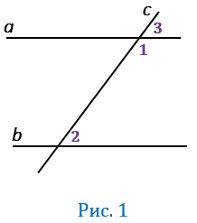

Теорема
Если две параллельные прямые пересечены секущей, то сумма односторонних углов равна 180°.

Доказательство
Пусть параллельные прямые a и b пересечены секущей с. Докажем что ∠1=∠2 . По условию a∥b , значит соответственные углы 2 и 3 равны, т.е.∠2 =∠3 (по теореме о соответственных углах). При этом ∠1 и ∠3 - смежные, следовательно, их сумма равна 180 °, т.е.∠1 +∠3 = 180°.
Из равенств ∠2=∠3 и ∠1 +∠3 = 180° следует, что ∠1 +∠2 = 180°
Теорема доказана.